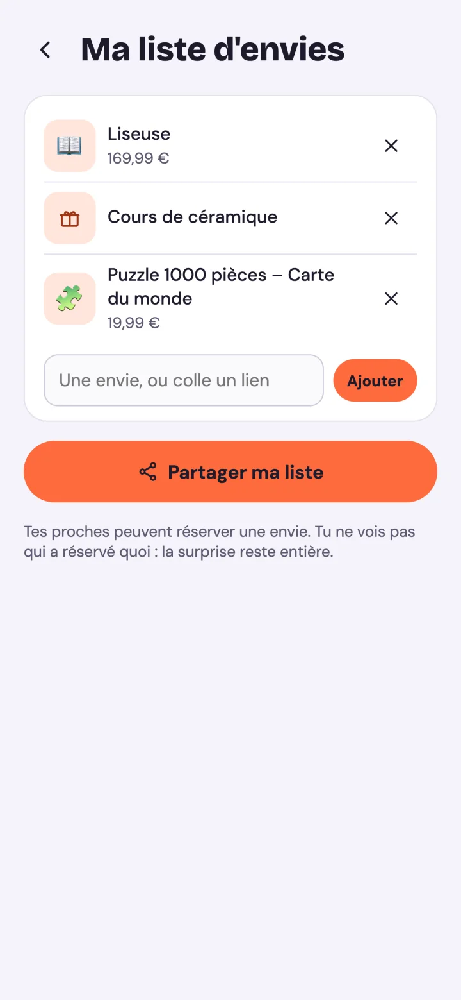
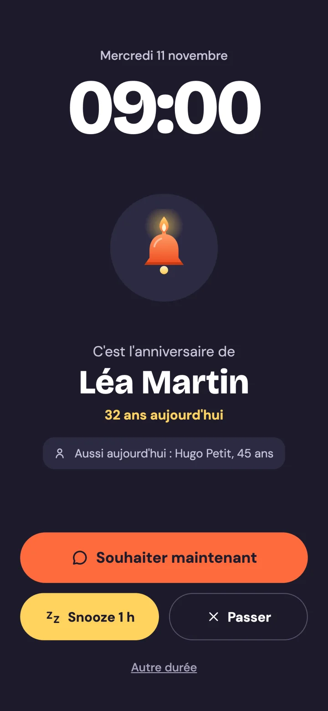
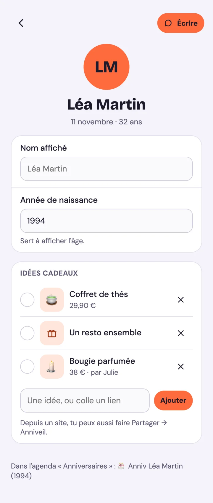
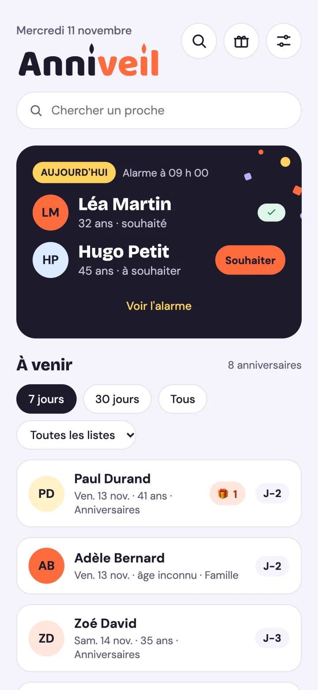
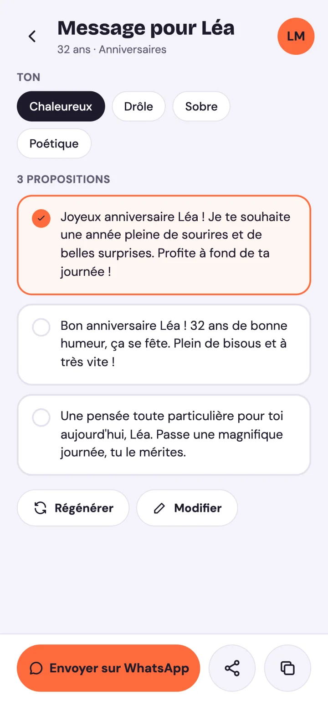
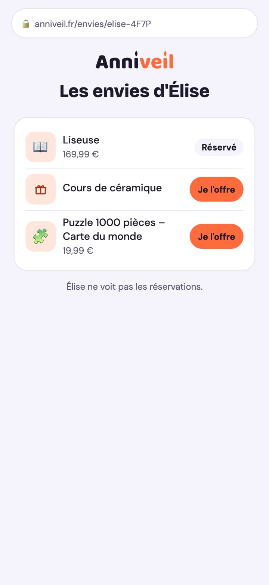

Le foyer
Invitez la personne avec qui vous vivez : vous partagez vos idées cadeaux pour les proches. Quand l'un coche « offert », l'autre le voit, et personne n'achète deux fois le même livre.
Anniveil lit les anniversaires de vos agendas et sonne le matin du jour J, comme un vrai réveil. Le message est déjà prêt : il ne reste qu'à l'envoyer.
Bientôt sur Android et iPhone

Une notification se balaie et s'oublie. Une alarme, non. Voici ce qu'Anniveil fait autour d'un anniversaire, du rappel cadeau au dernier appel du soir.
Une idée vous vient en mars pour un anniversaire de novembre : notez-la sur la fiche du proche, ou partagez un lien depuis une boutique. Une semaine avant, Anniveil vous la rappelle.

Plein écran, avec une vraie sonnerie. Vous choisissez : souhaiter tout de suite, reporter à plus tard dans la journée, ou passer. L'heure, la sonnerie et le vibreur se règlent, et tout peut se couper.

Trois propositions avec le prénom et l'âge, dans le ton que vous voulez : chaleureux, drôle, sobre ou poétique. Vous retouchez si besoin, puis vous l'envoyez par WhatsApp, par SMS ou par l'appli de votre choix. Anniveil n'envoie jamais rien à votre place.

Journée chargée, anniversaire toujours en attente : un dernier rappel sonne avant minuit. Et si le jour est passé, Anniveil propose un message de rattrapage le lendemain.

Invitez la personne avec qui vous vivez : vous partagez vos idées cadeaux pour les proches. Quand l'un coche « offert », l'autre le voit, et personne n'achète deux fois le même livre.

Envoyez un lien à vos proches. Ils voient vos envies sur une page web, sans installer l'app, et réservent ce qu'ils offrent. Les réservations ne s'affichent pas dans votre app : la surprise reste entière.